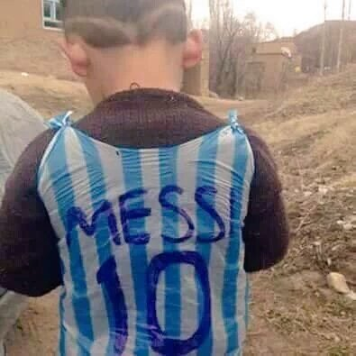

Soccer Star Wants To Track Down Iraqi Child Who Made A Jersey From A Plastic Bag
Lionel Messi wants to find a boy in Iraq who was pictured in a mock jersey of the international soccer star made from plastic bags.
The image began floating around social media last week and is said to be from the wartorn region of Dohuk, Iraq. As the image spread, it caught Messi's attention.
The boy's improvised jersey resembles Messi's Argentina national shirt, which has thin blue-and-white stripes.
According to reports, the Barcelona captain is trying to do something to help the child.
According to a Messi fan account on Twitter, @Messi10stats, they received a message from the soccer player's team and "they want to know who the kid is so that Leo can arrange something for him"
There has been no official word from the star, but the man who is considered one of the best to ever play the game and has done charity work for children in the past, including partnering with UNICEF.